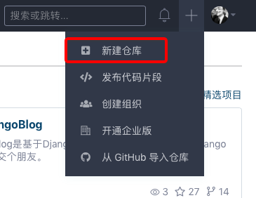
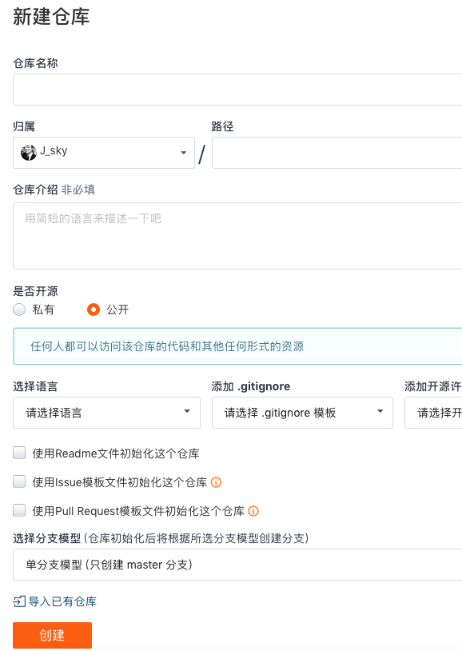

Vue快速学习笔记(3)Vue的组件
作者:J.sky 发布时间:2020-02-04 15:08:07 标签: Vue
Vue中的组件
首先注册组件：
Vue.component("my-btn", {
data:function() {
return {
count:0
}
},
template:"#mybtn"
});
需要一个组件名称和组件的代码模板，组件中的数据和Vue实例的数据不同，一个组件的data选项必须是一个函数。
定义模板
<template id="mybtn">
<button v-on:click="count++">已经点击了{{ count }}次！</button>
</template>
编写Vue实例，完整代码如下：
<!-- 开发环境版本，包含了有帮助的命令行警告 -->
<script src="assets/plugins/vue.js"></script>
<template id="mybtn">
<button v-on:click="count++">已经点击了{{ count }}次！</button>
</template>
<div id="app">
<my-btn></my-btn>
<my-btn></my-btn>
<my-btn></my-btn>
</div>
<script>
Vue.component("my-btn", {
data:function() {
return {
count:0
}
},
template:"#mybtn"
});
vm = new Vue({
el:'#app'
})
</script>
如上，就可以实现一个全局的组件注册，可以重复使用。
Vue快速学习笔记(2)Vue中的监听与计算属性
作者:J.sky 发布时间:2020-02-01 10:31:26 标签: Vue
Vue中的监听
watch用来监听Vue实例中数据的变化，然后可以出发一个事件。
例如，反转字符串：
<script src="assets/plugins/vue.js"></script>
<div id="app">
<input type="text" v-model="vt">
<p v-text="nvt"></p>
</div>
<script>
var vm = new Vue({
el:"#app",
data:{
vt:"",
nvt:""
},
watch: {
vt:function(val){
this.nvt=this.vt.split('').reverse().join('')
}
},
})
</script>
除了 watch 选项之外，您还可以使用命令式的 vm.$watch API。
Vue中的计算属性
计算属性和监听有些相似，有的时候作用都差不多吧。
下边的例子就是采用Vue的计算属性，
<script src="assets/plugins/vue.js"></script>
<div id="app1">
<p>计算属性</p>
<input type="text" v-model="vt">
<p v-text="rtvt"></p>
</div>
<script>
var vm1 = new Vue({
el :"#app1",
data:{
vt:""
},
computed: {
rtvt:function(){
return this.vt.split("").reverse().join("")
}
},
})
</script>
感觉计算属性要比监听简单直观些。
Vue快速学习笔记(1)Vue实例基础
作者:J.sky 发布时间:2020-01-10 21:18:43 标签: Vue
Vue.js 简介
Vue.js（读音 /vjuː/, 类似于 view） 是一套构建用户界面的渐进式框架。
Vue 只关注视图层， 采用自底向上增量开发的设计。
Vue 的目标是通过尽可能简单的 API 实现响应的数据绑定和组合的视图组件。
第一个Vue实例
<!-- 开发环境版本，包含了有帮助的命令行警告 -->
<script src="assets/plugins/vue.js"></script>
<div id="v1" v-bind:title="title">
{{ msg }}
<p v-text="vtext"></p>
<div v-html="vhtml" v-on:click="alt"></div>
<input type="text" v-model="tx">
<p v-text="tx"></p>
</div>
<script>
var v = new Vue({
el: "#v1",
data:{
msg:"Hello Vue!",
title:"试试把鼠标放上去。",
vtext:"我是通过v-text绑定的数据",
vhtml:"<h1>哈哈哈字是不是好大？",
tx:"v-model绑定数据，修改试试吧"
},
methods:{
alt :function(){
alert("是不是有提示了？")
}
}
})
</script>
这是一个声明式渲染 {{ msg }}类似于模板便签被插在HTML中。
v-text,v-html是另外两种数据绑定方式。
v-bind:titleVue中的特殊指令，可以简写为:title,
v-on:click绑定点击事件
v-model 可以双向绑定数据，试试修改程序中的数据。
MVVM
MVVM是一种架构模式，并非一种框架，是一种思想，一种组织和管理代码的艺术。它利用数据绑定、属性依赖、路由事件、命令等特性实现高效灵活的架构。
在MVVM中，View和View Controller是联系在一起，可以把它们视为一个组件，View和View Controller都不能直接引用Model，而是通过引用视图模型（ViewModel），ViewModel是存放View Controller所需要数据的地方（View Controller敢要，ViewModel就敢给），使用MVVM会轻微的增加代码量，但总体上减少了代码的复杂性、耦合性。
使用碎言静态博客依托码云Pages搭建自己的免费博客
作者:J.sky 发布时间:2020-01-08 19:17:37 标签: 碎言博客

介绍
碎言这个名称取自与"碎言片语"，码兄累了吗？累了就休息一下，为未来的自己留下一些碎言片语吧。 演示： 碎言博客

安装
首先克隆下载碎言静态博客
可以通过git clone https://gitee.com/J_Sky/suiyan.git下载，也可以通过下载.zip压缩包下载后解压缩即可。
创建码云代码仓库
登录码云注册账号，然后开始创建自己的代码仓库用来存放博客的页面。
1. 创建

填写相关选项创建一个新的代码仓库

2.关联本地代码仓库
如果你对Git操作非常了解，可以跳过此步骤。
进入你本地博客的根目录：
先配置Git的基本信息
$ git config --global user.name "你的名字或昵称"
$ git config --global user.email "你的邮箱"
然后绑定远程代码仓库下边的仓库地址换成你刚刚建好的代码仓库的远程地址
$ git init
$ git remote add origin https://gitee.com/用户个性地址/HelloGitee.git
3.创建你的第一篇博客
在终端进入你的本地博客目录运行
python z.py
这个时候会打印一些关于z.py命令行的一些帮助信息，仔细看看可以了解一些基本操作。
未完待续
今天是个好日子发行了碎言静态博客的功能完整版
作者:J.sky 发布时间:2020-01-08 16:10:47 标签: 碎言博客
发布了碎言静态博客的功能完整第一个版本
经过这段时间的努力，终于把博客成功的更换成了自己开发的碎言静态博客，也算是对这段时间学习JavaScript的一个总结。 后续还要继续开发维护，添加一些使用的功能，目前来说，对这个版本最大的满意就是界面的美化和网站的加载速度。 后续还会继续优化。
未来需要添加的功能
- 支持在线一件换肤。
- 更好的拓展功能。
- 更实用的功能。
- 吸引更多的程序员兄弟前来提交代码。
加油2020！！